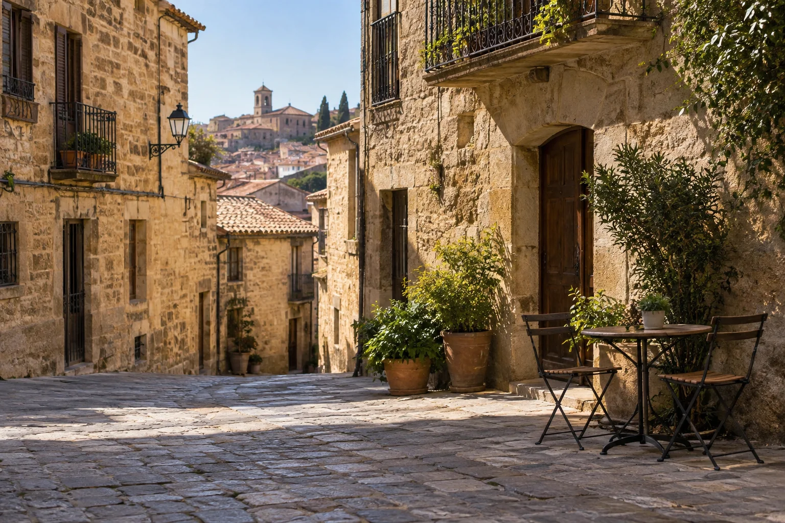
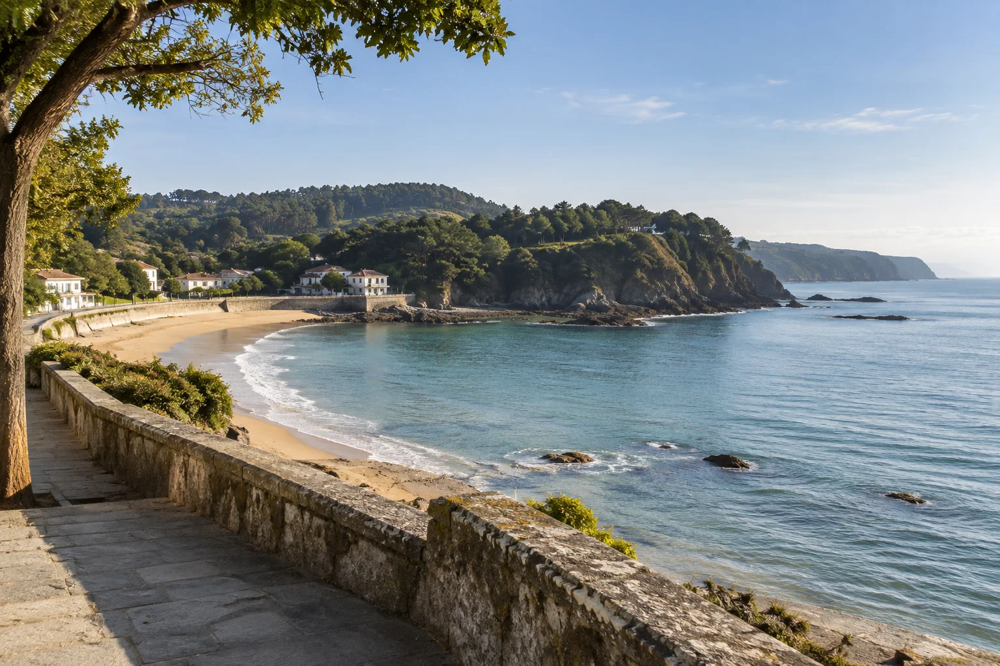
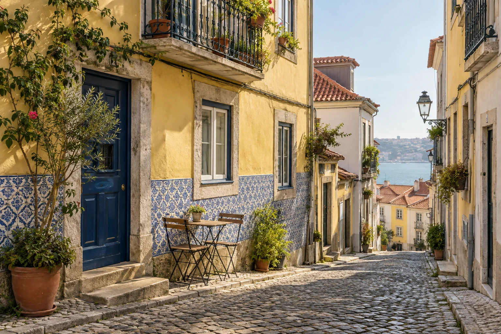

01Inland Spain
Start with the scale of Madrid, then give a smaller city a little more of your time. Seven nights, two bases and a single change of scene.
MadridSegovia
Read the full journey Fewer changes of hotel. A longer lunch. A street worth walking twice. We plan private journeys around the things you want to have time for.
An independent, eight-person planning studio in Valencia.

Our part of the worldSpain & Portugal
A considered rhythmTwo bases. One change of scene.
Your travelling companyCouples, families & small groups
These are complete sample itineraries, with room to adapt the length, interests and daily rhythm. They are starting points for a conversation.

01Start with the scale of Madrid, then give a smaller city a little more of your time. Seven nights, two bases and a single change of scene.
The river first, the bay next. A week between Bilbao and Donostia / San Sebastián, with enough space around the food and city walks to make each place your own.

03A Lisbon street that makes you slow down. A Porto afternoon with no next appointment. Two cities, one rail link and time to notice the everyday details.
That is why we leave space in the itinerary. A transfer gets its own day. A city gets more than one night. The end of the week still has somewhere for a favourite place to fit.
Start with your companions, the length of the trip and the kind of days you enjoy. We consider the pace before adding stops.
We shape a route and stay-area shortlist, with movement days, activity suggestions and deliberate time left open.
A written plan identifies what to book, what needs checking and what remains your choice. Travel providers handle the bookings.
Choose a route, a rhythm and the things you enjoy. We will turn those choices into a useful first outline.